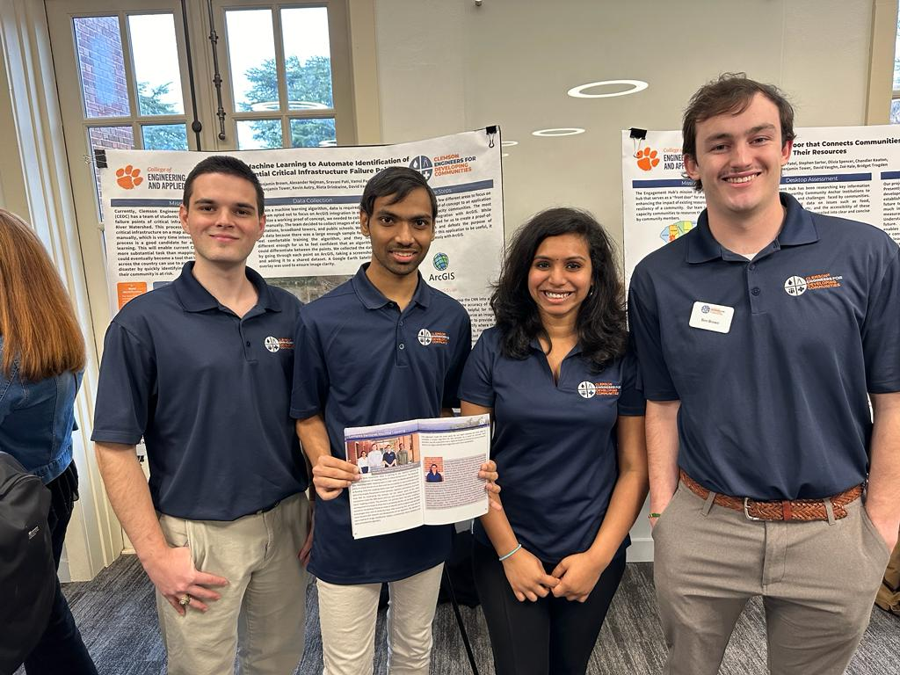
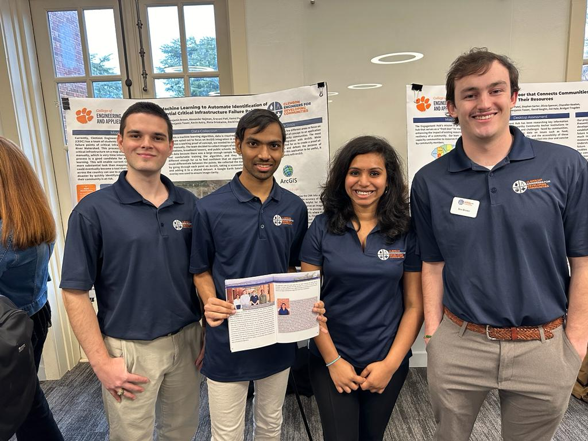

About Me
Hello! I’m Sravani Pati, a passionate data enthusiast with a creative edge and a relentless drive to excel in AI and data science. My journey is fueled by a love for technology and a dedication to harnessing data to create meaningful, impactful solutions. With a strong foundation in machine learning, statistical analysis, and data engineering, I am committed to leveraging my skills to solve real-world challenges. Known for my analytical rigor and ability to innovate, I am eager to bring my expertise to an organization where I can contribute significantly while continuing to grow as a data science professional.
Bachelors Journey (2017 - 2021)
Inspired by my early fascination with technology, I pursued a Bachelor’s degree in Computer Science from Sampoorna Institute of Technology and Research, Visvesvaraya Technological University. Throughout my studies, I consistently achieved a GPA above 8.5 each semester, culminating in an impressive overall GPA of 8.9/10. This accomplishment stands as a testament to my dedication and perseverance, earning me recognition among faculty and peers alike. By my final semesters, I ranked among the top 10 in the university, a proud moment that brought honor to my professors and family.
Key Projects and Experiences
Machine learning specialist ( Internship 2019 )
Internship at Aptech | Duration: 3 months
Driven by a passion for applying data science to real-world challenges, I gained practical experience during an internship with Aptech, where I developed a machine learning model for a University Admission Prediction System. This project encompassed end-to-end data processing, model training, and evaluation. After testing multiple algorithms, I identified the Multi-layer Perceptron as the most effective model and deployed it on a website, enabling students to input their profiles and receive tailored college recommendations based on their likelihood of admission. This experience not only deepened my technical skills in machine learning and deployment but also showed me firsthand how AI can drive personalized, impactful solutions.
- Improved prediction accuracy by 35% with model optimization.
- Utilized AWS EC2 for model deployment and AWS S3 for data storage.
- Integrated AWS Lambda to reduce processing time and costs, improving efficiency by 20%.
- Streamlined API handling through integration with Amazon API Gateway, reducing shortlisting time by 70%.
Machine learning and Python (2020 - 2021)
Final Year Project | Duration: 2020 - 2021
Object Detection in Real-Time with Voice Output
In my final year, I developed a real-time object detection system using YOLO and pyttsx3 for voice output. This system assists visually impaired individuals by identifying and naming objects in their path, providing them with vital spatial awareness. It detects multiple objects in various environments and delivers audio messages to notify the user of any detected objects.
- Adversarial Attacks: Explored techniques such as hiding attacks and misclassification attacks to test the robustness of the object detection system.
- Voice Output: Integrated text-to-speech functionality using pyttsx3, enabling detected objects to be announced audibly.
- YOLO Algorithm: Implemented the YOLO (You Only Look Once) object detection model, which offers high-speed processing with reliable accuracy.
- Real-Time Detection: Achieved a detection accuracy of over 95% with real-time processing, providing quick responses for user safety.
This project not only strengthened my technical knowledge but also inspired me deeply. The experience of creating a solution with real-world impact motivated me to pursue a master’s degree, with a vision to advance my career in data science and AI.
View More DetailsNice Hi-Tech Centre (Full-Time Aug 2021 – Jul 2022)
Data Scientist | Duration: 1 year
After completing my bachelor’s degree, I initially planned to pursue a master’s program, but due to COVID-19, I decided to gain hands-on experience and joined Nice Hi-Tech Centre as a Data Scientist. In this dynamic startup environment, I tackled the Enron Fraud Detection Project, where I built robust data pipelines, performed feature engineering, and implemented machine learning models for fraud detection. Testing multiple algorithms, the AdaBoost model emerged as the most effective, achieving an accuracy of 81.29% and showcasing my commitment to precision and reliability in threat detection.
- Deployed fraud detection models on Microsoft Azure using Pyspark and SQL for data management.
- Reduced inconsistencies by 95% through effective feature engineering.
- Enhanced model performance by 20% with hyperparameter tuning using GridSearchCV.
- Streamlined workflows with CI/CD pipelines, lowering hosting costs by 60%.
Masters Journey (2022 - 2024)
In August 2022, my dream came true as I joined Clemson University, one of the top 100 universities in the USA. The decision to choose Clemson was driven by its cutting-edge resources, including world-class supercomputing facilities and an inspiring research environment. Clemson’s commitment to innovation, hands-on labs, and real-world applications offered the ideal setting for me to advance in data science.


.jpeg)
During my time here, I have immersed myself in various real-time projects and gained hands-on experience with trending technologies across multiple domains. I completed my Master’s in Data Science with a commendable GPA of 3.8, which stands as a testament to my hard work and dedication. Through Clemson, I acquired a wealth of skills, ranging from advanced data analytics to machine learning and AI, equipping me to tackle complex challenges in the field – just as I had dreamed.
Visit : Clemson UniversityKey Projects and Experiences
Real-Time Knowledge Acquisition (Aug 2022 - Dec 2022)
Human-Centered Computing Project | Duration: 5 months
As part of my Human-Centered Computing class, I developed a Real-Time Knowledge Acquisition system, designed as a College Information Management System to support efficient data management and real-time updates for students, faculty, and administrators. This project honed my skills in full-stack development, with a focus on human-centered design principles that prioritize usability and accessibility for all users.
- Built with Django for backend and Bootstrap for a responsive front-end.
- Enabled real-time data access for attendance, grades, and schedules.
- Conducted usability testing to ensure the system met user needs and minimized data inaccuracies.
Adversarial Attacks Against Object Detection (Aug 2022 - Dec 2022)
Research Project in Security and Computing Principles | Instructor: Prof. Mert Pese | Duration: 5 months
As someone deeply passionate about machine learning, I had the opportunity to build on my prior experience from my bachelor’s project, expanding it from a machine learning perspective to a security-focused application. In this project for the Security and Computing Principles course, I explored adversarial attack methods on object detection models, studying the vulnerabilities of classifiers and ways to mitigate these risks.
Under the guidance of Professor Mert Pese, a highly knowledgeable and inspiring educator in the field of security, I delved into attack strategies like Hiding Attack (HA) and Misclassification Attack (MA). This research not only enhanced my understanding of machine learning but also gave me insights into real-world security challenges and defense strategies.
- Developed robust adversarial examples (AEs) using Feature-Interference Reinforcement (FIR) and realistic constraints.
- Achieved a 90% success rate in evading detection across multiple object detection models such as YOLO and RCNN.
- Demonstrated transferability of attacks across models, with extensive testing in varied physical environments.
Data Breaches in Top Tech Companies (Aug 2022 - Dec 2023)
Major Project in Data Visualization | Instructor: Prof. Federico Iuricich | Duration: 5 months
This project focused on creating insightful visualizations of data breaches among top tech companies using techniques like bubble charts, bar charts, and donut charts. Under the expert guidance of Professor Federico Iuricich, who possesses deep expertise in data visualization, I had the privilege to enhance my skills in data storytelling with tools like Tableau and D3.js. This project highlighted sensitive data vulnerabilities exploited through hacking techniques, including email, SSN, and personal information, across different companies.
- Developed interactive bubble charts representing data losses across various sensitivity types.
- Utilized bar charts to compare data losses per company, scaled in millions for clarity.
- Created a donut chart to analyze hacking techniques used across compromised companies, adding hover and filter interactions for enhanced user experience.
- Implemented year-based data filtering and dynamic updates across visualizations, linking charts to allow synchronized data views for comprehensive analysis.
Migraine Classification Based on Gene Expressions (Jan 2023 - May 2023)
Applied Data Science Project | Instructor: Prof. Carlos Toxtli | Duration: 5 months
This project aimed to classify types of migraines using gene expression data through advanced machine learning models. Under the expert guidance of Professor Carlos Toxtli, an inspiring educator with deep knowledge in AI, I was able to explore various models like K-Nearest Neighbor (KNN), Decision Tree, Multi-Layer Perceptron (MLP), Support Vector Machines (SVM), Random Forest, and XGBoost. This hands-on experience enhanced my understanding of data preprocessing, model evaluation, and optimization techniques.
- Data Collection: Analyzed blood samples and RNA sequences from patients, identifying key genetic markers for migraines.
- Data Preprocessing: Converted gene sequences to numeric quality scores, implemented feature engineering, and handled outliers.
- Model Evaluation: Applied multiple models, achieving the highest accuracy (93%) with the Random Forest model for classifying migraine types.
- Feature Importance Analysis: Identified influential genes and quality scores critical to migraine classification.
The project concluded with the successful application of Random Forest, demonstrating a high prediction accuracy for migraine type classification. These findings underscore the potential of machine learning in medical diagnostics, potentially guiding targeted treatments for migraine sufferers.
View More DetailsSimulating and Visualizing the Optimization Process (Jan 2023 - Feb 2023)
Project in Deep Learning Optimization | Instructor: Prof. Feng Luo
This project explores various aspects of neural network optimization using the MNIST dataset. It involved visualizing optimization processes through PCA, observing gradient norms and loss across epochs, and examining overfitting behavior in CNN models. Key experiments included studying the effects of network parameter scaling on generalization, analyzing optimization landscape flatness, and comparing performance across different batch sizes and learning rates.
- Used PCA to visualize optimization dynamics on a 3-layer model and analyzed model response to random labels.
- Investigated the impact of increasing parameters on overfitting and generalization.
- Analyzed optimization landscape characteristics by varying batch sizes and learning rates, providing insights into network performance.
Extractive Question Answering Model Using BERT on Spoken Language (Jan 2023 - May 2023)
Deep Learning Project in NLP | Instructor: Prof. Feng Luo
Developed an extractive question-answering model for spoken language processing using the SpokenSquad dataset and BERT. This project addressed challenges like noise and errors in spoken data, employing BERT's advanced training methods, such as Masked Language Modeling and Next Sentence Prediction. By fine-tuning pre-trained models from Hugging Face, the model achieved notable accuracy, as evaluated by F1 scores, and optimized the learning rate using a linear scheduler. The 'doc stride' parameter was particularly useful for handling sequential text passages.
- Adapted BERT for spoken language question-answering, focusing on handling noise and improving response accuracy.
- Optimized model performance with learning rate scheduling and implemented strategies to handle large text passages.
- Evaluated model with precision-focused metrics (F1 score) to assess accuracy in spoken language processing.
Exploring Advanced GAN Architectures for Image Generation (Apr 2023)
Project in Advanced Deep Learning | Instructor: Prof. Feng Luo
This project investigates three advanced GAN architectures: DCGAN (Deep Convolutional GANs), WGAN (Wasserstein GANs), and ACGAN (Auxiliary Classifier GANs). The focus was on evaluating each model's capabilities for high-quality image generation on the CIFAR-10 dataset. Key aspects include DCGAN's use of convolutional layers and batch normalization for realistic images, WGAN's innovative Wasserstein loss function to improve training stability, and ACGAN's integration of attribute-specific classifiers for targeted image generation.
- Applied each GAN architecture to generate distinct, high-quality images.
- Explored the strengths and limitations of each model, especially in handling training instability and feature-specific generation.
- Implemented and evaluated models on the CIFAR-10 dataset, gaining insights into the practical applications of GANs in image synthesis.
Clemson Engineers for Developing Communities (CPT Aug 2023 - May 2024 )
I have always been passionate about serving communities and helping people. Fortunately, during my third semester, I had the opportunity to work with Clemson Engineers for Developing Communities (CEDC) as part of my CPT. This experience allowed me to contribute to underserved communities, and I felt a deep sense of fulfillment in being part of CEDC. Initially, I joined as a Data Analyst, and soon, due to my performance, I was also given the role of Data Scientist. In this role, I worked with real data to manage disaster analysis and grant automation.
I am grateful to my manager, Victoriana Malvaso, who guided me through the grant automation project with great expertise, and to Rieta Drinkwine, who supported me in my Data Analyst role with her remarkable leadership and understanding. Recognizing my capabilities, Rieta promoted me to Team Leader, where I managed a diverse team of four individuals who were new to data analysis tools. I provided them with guidance on tool functionality, outlined code structures, and developed templates to streamline the analysis process. I created templates and reusable code structures so they could easily change file names and perform analysis across multiple files. To ensure everyone’s understanding, I occasionally held one-on-one sessions, giving them hands-on support and detailed explanations.
Both Rieta and Victoriana were incredibly supportive, and I learned a lot from them. I am also thankful to David for providing me with this opportunity to serve communities. This phase of my career taught me invaluable lessons, and I am honored to have been part of this impactful journey.
Data Scientist - DSR3P Fund Navigator Project | Duration: 10 Months
Associated with Clemson Engineers for Developing Communities
During my tenure as a Data Scientist for the DSR3P Fund Navigator project, I developed and implemented advanced machine learning models to automate the categorization of federal grants. This project aimed to simplify the grant application process for low-capacity communities, enabling streamlined grant identification and supporting equitable resource allocation. My key contributions included:
- Data Preprocessing and Cleaning: Launched a robust data preprocessing pipeline using Microsoft Azure, reducing data inconsistencies by 95% through automated validation scripts.
- Natural Language Processing (NLP): Employed tokenization, stop-word removal, and LDA topic modeling to uncover themes in grant descriptions, supporting targeted grant recommendations.
- Machine Learning Model Development: Trained various machine learning models, achieving high accuracy with Logistic Regression and Multinomial Naive Bayes. Applied techniques like SMOTE to handle class imbalance.
- Feature Engineering and Model Refinement: Incorporated bi-grams and tri-grams, conducted error analysis, and improved model performance iteratively.
- Interactive Dashboards and Data Insights: Developed Tableau dashboards for strategic insights, enhancing decision-making by 30% and using SQL databases for efficient data management.
- Grant Classification: Successfully classified over 7000 grants for future automation, paving the way for streamlined processes.
- Future Work and Deployment: Focused on creating an intuitive user interface, integrating models into operational systems, and establishing feedback mechanisms for continuous improvement.
Data Analyst - Disaster Management and Community Resilience Analysis | Duration: 10 Months
Associated with Clemson Engineers for Developing Communities
In my role as a Data Analyst, I led a project that combined Python and Power BI to analyze qualitative data from disaster preparedness and recovery interviews. This project aimed to uncover community resilience patterns and support policy-making. Key contributions included:
- Python Analysis: Conducted text preprocessing, term frequency analysis, and topic modeling in Python, uncovering key themes in disaster resilience discussions.
- Power BI Visualization: Used Power BI for spatial analysis, generating interactive dashboards to visualize regional variations in disaster experiences.
- Key Findings: Revealed themes like community engagement, infrastructure challenges, and natural disaster impacts through comprehensive topic modeling and geographic analysis.
- Integration with Power BI: Leveraged Power BI's geographic visualization to map disaster-related themes, enhancing the accessibility of insights for stakeholders.
- Role and Contributions: Supervised a team of four, conducted KT analysis for tool selection, provided training in Python, Power BI, and Tableau, and led data cleaning strategies to ensure high analysis accuracy.
Cross-functional Collaboration and Leadership
Collaborating with cross-functional teams, I contributed to developing the Fund Navigator tool using Scrum methodology and QA testing. Leveraging machine learning and NLP techniques, I optimized grant allocation strategies by 45%, achieving 91.67% accuracy and supporting automated decision-making.
- Grant Allocation Optimization: Enhanced allocation strategies with Multinomial Naive Bayes and NLP, resulting in a 45% improvement and 91.67% accuracy in decision-making processes.
- Web Scraping for Data Collection: Used Python’s BeautifulSoup and Selenium to gather grant data from government sites, boosting data pipeline throughput by 35%.
- Training and Support: Supervised a team of four, providing training in Power BI, Tableau, and Python, streamlining project processes by 80%.
- Tool Evaluation: Conducted Kepner-Tregoe analysis and A/B testing to evaluate tools, improving testing efficiency by 65%.
CEDC Photo Gallery
Visit : Clemson Engineers for developing communitiesFailure Point Automation (Aug 2023 - Dec 2023)
Project in Critical Infrastructure Automation | Instructor: Prof. David Vaughn | Duration: 5 months
This project integrated machine learning with GIS to automate the analysis of critical infrastructure risks, enhancing disaster resilience in underserved communities. Under the guidance of Professor David Vaughn, I developed and implemented advanced computer vision algorithms such as CNN and R-CNN. This proof-of-concept project aims to improve community resilience by automating the identification of critical infrastructure failure points along the Savannah River Watershed.
- Selected and trained a Convolutional Neural Network (CNN) model for image classification, with future scalability to Region-based CNN (R-CNN) for object recognition.
- Manually collected and preprocessed satellite images of critical infrastructure (e.g., substations, broadband towers) using ArcGIS and Google Earth.
- Applied data augmentation techniques to expand the dataset and enhance model training, improving model accuracy and robustness.
- Identified potential challenges and troubleshooting steps, such as refining data augmentation methods and implementing data transfer techniques to increase training sample size.
Future Steps: The next phase focuses on integrating the model with ArcGIS to automate mapping, refining CNN to R-CNN for precise failure point localization, and expanding infrastructure categories to better serve low-capacity communities across the nation.
 



Pizza Store Database Project (Aug 2023 - Dec 2023)
Project in Database Management Systems | Instructor: Prof. Connie Taylor | Duration: 5 months
This project focused on designing and implementing a comprehensive database for Pizzas-R-Us, incorporating an Enhanced ER model to manage orders, toppings, customers, and discounts. Using SQL and Java, I developed a MySQL database, created reporting views, and built a command-line application for order management and profitability analysis.
- Designed an Enhanced Entity-Relationship Diagram (ERD) to represent the database structure.
- Developed SQL scripts to create and populate tables and implemented views for insights, such as topping popularity and profit analysis.
- Built a Java command-line application for customer management, order processing, and inventory tracking, connected via JDBC.
Cloud Solution Architecture for High Availability and Security (Jan 2024 - May 2024)
Project in Cloud Computing | Instructor: Prof. Mitch Shue | Duration: 5 months
This project involved designing a robust cloud architecture aimed at high availability, security, and scalability using Amazon Web Services (AWS). Guided by Professor Mitch Shue, who provided comprehensive insights into cloud computing concepts, we developed skills through hands-on labs and various projects that reinforced practical knowledge in cloud environments.
- Built an auto-scaling architecture across multiple availability zones, integrating load balancing and scaling policies to ensure high availability.
- Implemented security measures including Identity and Access Management (IAM) with role-based access control to enhance cloud security.
- Leveraged AWS CloudWatch, CloudTrail, and AWS Config for real-time monitoring, auditing, and compliance management.
- Configured network and security settings with customized security groups, VPC, and NAT gateways to secure resources and manage access control.
This project, along with additional hands-on labs, equipped me with in-depth knowledge of cloud infrastructure and security practices essential for cloud-based solutions.
Malware Analysis Project (Aug 2023 – Dec 2023)
Course: Malware Reverse Engineering | Instructor: Prof. Lu Yu | Duration: 5 months
These projects focused on malware static and dynamic analysis techniques on Windows, employing tools like PEiD, VirusTotal, and IDA Pro. The analysis covered various indicators of malicious behaviors, such as persistence mechanisms, host-based signatures, and network-based indicators.
- Static Analysis: Utilized PEiD, IDA, and VirusTotal for analyzing malware functions, imports, and potential file modifications.
- Dynamic Analysis: Observed malware behavior using Any.Run to analyze registry modifications, file interactions, and network activities in a virtualized environment.
- DLL Injection: Explored DLL injection techniques using C++ to simulate memory manipulation, handle acquisition, and thread injection in malware scenarios on virtualized systems.
Now, I am also equipped to identify vulnerabilities and determine if a system or file contains malware, improving security and ensuring that malicious threats are effectively managed.
Portfolio Website Development (Feb 2024)
Personal Project | Duration: 1 month
This portfolio serves as a centralized showcase of my skills, achievements, and projects in a visually engaging, user-friendly format. Crafted with HTML, CSS, and JavaScript, it highlights my journey in web development and is optimized for responsive design across devices.
- Design & Layout: Built with a mobile-first approach, using media queries for consistent, responsive design across desktops, tablets, and mobile devices.
- Interactive Elements: Integrated smooth scrolling, navigation, and JavaScript-based dynamic elements to enhance user engagement.
- Project Displays: Featured project showcases with descriptions, images, and links, allowing visitors to explore my work in-depth.
- Optimized User Experience: Organized structure with semantic HTML, accessible navigation, and clear, interactive elements for easy exploration.
This project has been a valuable learning experience, from solving layout challenges with CSS media queries to implementing interactivity through JavaScript, reflecting my growth in web development. Future plans include incorporating React.js for enhanced interactivity and expanding the project showcase as my portfolio evolves.
View More DetailsTikTok Claims Classification (Jan 2024 - Mar 2024)
Personal Project | Duration: 3 months
This project applied the PACE (Project, Analyze, Communicate, Execute) strategy to build a machine learning model for classifying TikTok claims and opinions, aimed at enhancing content moderation and improving user experience. Through a series of six milestones, I tackled data analysis, hypothesis testing, regression modeling, and final machine learning implementation.
- Milestone 1: Developed project proposal, defined milestones, identified stakeholders, and established PACE workflow for organized execution.
- Milestone 2: Built and examined a data frame of TikTok’s dataset, performed initial EDA, and provided summary insights.
- Milestone 3: Conducted comprehensive EDA with visualizations, exploring key variables and correlations in claims versus opinion data.
- Milestone 4: Performed hypothesis testing to compare video engagement across user types, yielding insights into verified vs. unverified account behavior.
- Milestone 5: Built a logistic regression model to analyze verified vs. unverified account attributes, achieving notable predictive accuracy.
- Milestone 6: Developed and fine-tuned a Random Forest classification model, achieving a recall score of 99.5%, with feature importance highlighting user engagement metrics.
The final model identified claims effectively, minimizing false negatives to ensure TikTok’s human moderators focus on content most likely to violate terms of service. This project sharpened my skills in EDA, hypothesis testing, and machine learning model tuning, and reinforced the importance of ethical considerations in content moderation automation.
View More DetailsExecutive Sales Analysis (Apr 2024 - Jun 2024)
Personal Project | Duration: 3 Months
In this project, I prepared and configured sales data for in-depth analysis, developed a robust data model, configured advanced aggregations using DAX, and created comprehensive sales and profit reports. The project culminated in the development of an executive dashboard, complete with automated alerts and subscriptions for continuous monitoring.
-
Milestone 1: Data Preparation and Model Development
- Processed raw sales data by calculating critical metrics, including Gross Revenue, Total Tax, and Net Revenue.
- Loaded, transformed, and optimized data within Power BI, setting appropriate data types and establishing table relationships for a structured model.
- Developed a time-based Calendar table to enable advanced time intelligence functions.
- Created Yearly, Quarterly, and Year-to-Date profit metrics using DAX to enhance financial insights.
- Generated visual reports with bar, column, pie, and line charts, utilizing Power BI’s Performance Analyzer for report optimization.
- Developed an executive dashboard by pinning key metrics and visuals from the Sales and Profit Overview reports.
- Configured automated alerts for essential metrics like Gross Revenue and established report subscriptions for real-time updates.
This project provided hands-on experience with data modeling, DAX-driven aggregations, report design, and the configuration of an executive dashboard in Power BI, fostering data-driven decision-making through automated insights.
View More Details


Human AI Empowerment Lab, Clemson University ( Full Time May 2024 – Present)
AI Engineer/Researcher | Duration: Present
Joining Clemson’s Human AI Empowerment Lab under the guidance of Assistant Professor Carlos Toxtli, a seasoned expert in AI and data science, has been a transformative experience. I developed an advanced comment triage system powered by GEMMA-2B and Gemini 1.5 Pro, achieving a 25% increase in feedback classification accuracy, reduced training time by 55% with Clemson's supercomputing resources, and engineered a data pipeline with a 95% F1-score in few-shot learning scenarios.
- Reduced manual triage time by 50%, streamlining feedback prioritization and handling high comment volumes.
- ACM SIG Conference Paper: Co-authored a paper with Professor Toxtli on the AI-Powered Comment Triage system, now submitted to the ACM SIG Conference.
Currently, we are pioneering a new project, Customer Journey Mapping and Sales Forecasting with Multimodal LLMs, leveraging models like FLAVA and LLaMA to integrate diverse data formats for predictive insights in e-commerce and customer retention.
View More DetailsCertifications and Lifelong Learning
- AWS Certified Solutions Architect – Associate – Enhancing my understanding of scalable cloud infrastructures.
- IBM Data Engineering – Building foundational skills in data pipeline management and big data handling.
- Google Advanced Data Analytics – Mastering advanced analytics techniques to draw insights from complex data.
- Microsoft Power BI Analytics – Proficient in creating dynamic dashboards for effective data communication.
- Engineering Responsible Conduct of Research and Group 1 Investigators Conducting Social and Behavioral Science Research (SBR) – Ensuring adherence to ethical standards in data handling.
Personal Passions
Outside of work, I am passionate about dance. I constantly strive to learn new dance styles, and I've performed in various events during school and college. Another special part of my life is my pet, Leo, who remains one of my favorite companions. Above all, my parents are my pillars. My father, despite his physical challenges, has always been my strongest supporter, inspiring me to pursue my dreams without limitations.
Looking Ahead: The Future in AI
As a continuous learner with a commitment to mastering the evolving field of AI, I am particularly drawn to exploring AI-powered personalization, real-time insights, and multimodal data integration. I am currently preparing for further certifications in advanced AI and machine learning fields to solidify my knowledge and stay updated with cutting-edge technologies.